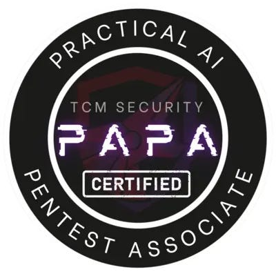

OSCP · OSWP · PWPP · PWPA · PAPA · EnCE · Linux+ · LPIC-1 · Network+ · Security+ · Pentest+ · eJPT · eWPT · BSc · PGCert
How I Became a PAPA (Practical AI Pentest Associate) by TCM Writeup

I heard about the PAPA in late 2025. A new AI-pentesting course/cert. Due to health issues, I hadn’t done any certs for a while, but I had been active in self-study (you kinda have to be in this industry). I hadn’t any experience of TCM, but friends had. The general consensus was: “TCM are great! The exams are no joke!” and wow, they weren’t kidding!
I purchased the course in late December, 2025 and began studying through AI Fundamentals 100 (which is now freely available here). The course serves as a pre-requistite to the PAPA course and I would not recommend anyone skips it and jumps straight into PAPA, or you will be missing out on essential information which may help during your studies.
The AI Fundamentals 100 covers neural networks and even has you setting up your own LLM locally so that you can learn how they function and compare different LLMs and how each responds differently based on how they were put together. Note: the course does advise the specs you need for the course, 16gb ram being the minimum, but 32gb is recommended. I personally had 16gb ram throughout but the extra would be beneficial.
After the AI Fundamentals 100, you’ll get a certificate of completion and you’ll be eligible to begin the PAPA course material. The PAPA course will have you covering prompt injection, indirect prompt injection and you’ll even dive into scripting in VS Code to look at the temperature of the LLM, identify the level of determinism of the LLM and much, much more.
If what you’ve just read sounds alien to you, or you’ve got some familiarity but you’re not quite sure on how it’s all put together, fear not, because the course covers all of that and by the end of it, you’ll have your own LLM to use as practice-material for the exam.
The exam! Let’s briefly discuss the exam. The exam utilises everything you were taught (and makes you think outside of the box too). As it says on the website, “The exam will assess a student’s ability to exploit an agentic AI application.” And it does. It really does assess you. You’ll be assessing yourself every step of the way. Did I do that correctly? Is there a better way? Did I study X enough?
The course made much, much more sense during the exam. The exam is the culmination of all your efforts throughout the AI Fundamentals 100 and the PAPA course material. If you studied hard and really understood how a prompt injection works, or how RAG works, or how jailbreaks work, then you’ll be in a good position to take it to the agentic AI and emerge victorious.
TCM pride themselves on not being CTF-like. There are no “flags” to capture and I think for the most part, this works well. What is the difference between a CTF and a real-world pentest? Well, usually, a CTF follows a relatively linear path and there is a guaranteed vulnerability on the box. With a real-world pentest, that isn’t the case and you must test each and every avenue you can and write up what you can. There’s 48 hours for the exam and 48 hours afterwards to write your report.
Are there any negatives? Not really. I will say though, I would have loved the ability to have online labs so that I didn’t have to use my own hardware for the course, but I was able to make it work (but strongly suggest people have a decent GPU for this course as the LLM setup will make use of it). The course is very fairly priced and there is a free retake should you fail the exam, as TCM don’t believe in profiting from your failure to complete the exam, which is commendable.
I managed to pass my exam in early 2026 which I am very happy about! So here’s the million dollar question: would I recommend the course? Yes! Will I do another TCM course? I already am doing the PWPA and will no-doubt post about that soon!
Thanks for reading! Subscribe and stay tuned for more.
P.S If you wish to check out another review of the PAPA, click here to read a comprehensive review by Vinicius on medium.
Disclaimer: All opinions and thoughts expressed in this review are my own and have not been influenced by any external party. This review was not sponsored, endorsed, or compensated by TCM Security or any affiliated organization.